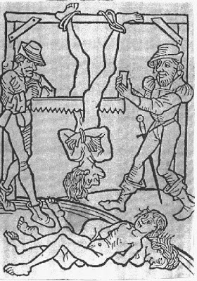
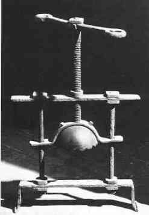
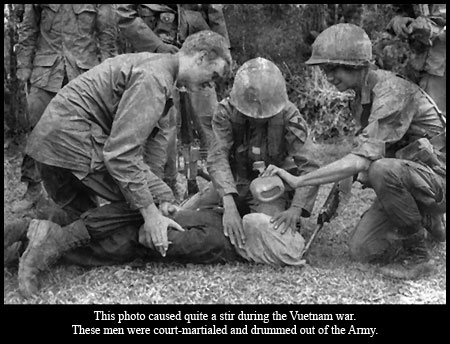
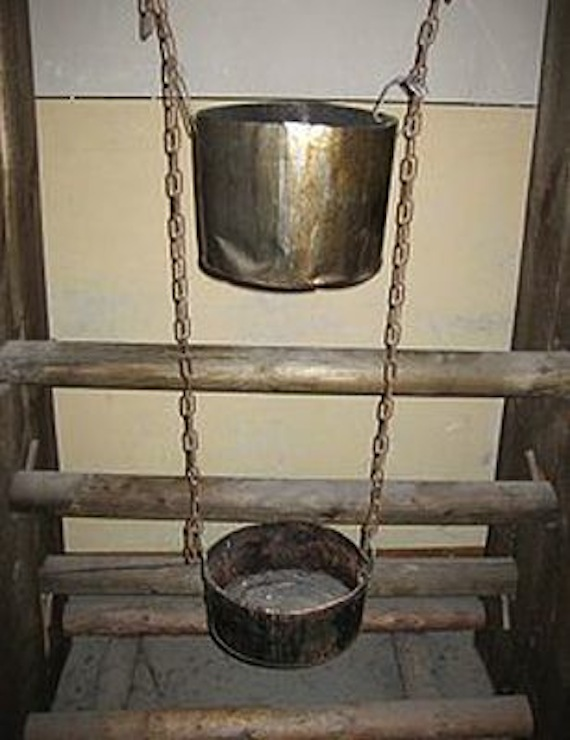
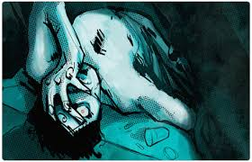
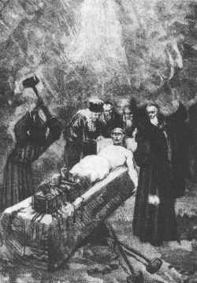
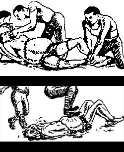
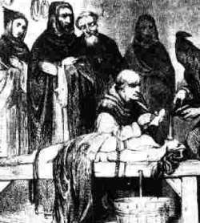

La torura

"El origen"
Los griegos practicaban la tortura entre los procedimientos judiciales (básanos), de aquí deriva el verbo basanixein que significa, verificar, mas únicamente se torturaba a los esclavos y, en ocasiones a los extranjeros. Los romanos también siguieron el mismo principio durante la República y el Alto Imperio. El texto romano clave sobre la tortura aparece en el Digesto de Justiniano (Cap. XVIII, libro 48), de ahí se advierte que las confesiones arrancadas bajo tortura son inseguras. Además de prohibida la tortura a menores de 14 años y mujeres embarazadas En el derecho romano la tortura se admitía como método de prueba (principalmente en el Digesto, 48, 18 y en diversas constituciones imperiales). El Breviario de Alarico y el Liber Iudiciorum visigodos recogen estas disposiciones tomadas del Código Teodosiano.8
En la Alta Edad Media no se recurrió a la tortura sino a la ordalía para determinar la veracidad o falsedad de una acusación y la culpabilidad o inocencia de una persona (lo que Tomás y Valiente llama "bilateralidad probatoria").9
La tortura fue sustituyendo a la ordalía en el Occidente medieval a partir de la recepción del derecho romano que se produce durante la llamada revolución del siglo XII. La Iglesia fue la primera en introducir su uso durante los papados de Alejandro III (1159-1181) e Inocencio III (1198-1216), aunque su regulación definitiva no se produjo hasta la bula Ad extirpanda promulgada en 1252 por el papa Inocencio IV. En el derecho común fueron las comunas italianas las que empezaron a utilizar y a regular la tortura como medio de prueba en el proceso penal y luego se extendió por las diferentes monarquías, al mismo tiempo que se difundía el estudio del derecho romano en las Universidades.10
En la Edad Media el proceso penal era de dos tipos: acusatorio, e inquisitorio, el primero requería de un acusador, y el segundo se daba únicamente mediante investigaciones. El método inquisitorio se basaba sobre pruebas escritas, y testimonios, dándole el mayor peso a la confesión, lo que condujo inevitablemente al empleo de la tortura como procedimiento penal.
El la Segunda Guerra Mundial y en la actualidad, la Gestapo, la CNI, la Kripo, la CIA y el FBI han sido sindicados como organismos estatales que aplican la tortura para sus fines.
El sufrimiento tiene su origen en la propia reacción ante los hechos
y no en la realidad de lo que está ocurriendo
Los instrumentos de tortura
LA RUEDA!!
El condenado, desnudo, era estirado boca arriba en el suelo o en el patíbulo con los miembros extendidos al máximo y atados a estacas o anillas de hierro. Bajo las muñecas, codos, rodillas y caderas se colocaban trozos de madera. El verdugo asestaba golpes violentos a la rueda, machacaba todos los huesos y articulaciones, intentando no dar golpes fatales.
Después dependiendo del tipo de rueda el procedimiento variaba.
Tipo 1 :
El condenado era desatado e introducido entre los radios de la gran rueda horizontal al extremo de un poste que después se alzaba. Los cuervos y otros animales arrancaban tiras de carne y vaciaban las cuencas de los ojos de la víctima, hasta que a ésta le llegaba la muerte.

Tipo 2 :
El condenado era colocado en una rueda de carro, de manera que los tobillos tocaran la cabeza, para lo cual las piernas debían dislocarse hacia arriba, poniéndose los brazos de manera que recorrieran todo el perímetro de la circunferencia. Después, se enganchaba la rueda en un eje que a su vez se clavaba enel suelo, quedando la rueda elevada y en posición horizontal, con el condenado sobre ella.

LA SIERRA
El condenado era puesto en una posición invertida, evitando también la muerte por desangramiento y asegurando que la víctima no perdía el conocimiento.
Generalmente no se perdía el conocimiento hasta que la sierra no llegaba al ombligo o incluso al pecho. Era una tortura muy utilizada por la inquisición sobre todo para ajusticiar a homosexuales. También en España fue un método de ejecución militar hasta el siglo XVIII.

EL PÉNDULO
Las muñecas de la víctima eran atadas por detrás de la espalda, se añadía una cuerda a esta ligadura izando al acusado.
Inmediatamente los húmeros se desarticulaban y poco a poco también las demás vértebras.

EL TORO DE FALARIS
Se introducía al individuo en su interior y posteriormente se encendía fuego bajo la barriga del toro. Los gritos de la víctima salían por la boca del toro y parecía que mugía.

EL APLASTA CABEZAS
Instrumento de tortura aplicado en la edad media destinado a reventar los huesos del cráneo. La barbilla de la víctima se colocaba en la barra inferior y el casquete era empujado hacia abajo por el tornillo. De esta forma primero se destrozan los alvéolos dentarios, después las mandíbulas y, por último, el cerebro se escurría por la cavidad de los ojos y entre los fragmentos del cráneo.

LA CUNA DE JUDAS
Método de tortura usado generalmente para confesiones. El prisionero es levantado y, una vez era elevado, se le soltaba de golpe para que cayese sobre la pirámide de madera, con punta de acero, provocando heridas en los testículos, la cavidad anal o vaginal.

LA PERA
Estos instrumentos se usaban en formatos orales y rectales. Se colocaban en la boca, recto o vagina de la víctima, y allí se desplegaban por medio de un tornillo hasta su máxima apertura. El interior de la cavidad quedaba dañado irremediablemente.
La pera oral normalmente se aplicaba a los predicadores heréticos, pero también a seglares reos de tendencia antiortodoxas. La pera vaginal, en cambio, estaba destinada a las mujeres culpables de tener relaciones con Satanás o con uno de sus familiares, y la rectal a los homosexuales.

La tortura es la búsqueda de la verdad mediante el tormento
Metodos de tortura actuales
CURA DE AGUA
Método de tortura que consistía en mantener al procesado totalmente inmovilizado sobre una mesa de madera, colocandole luego una toca o un trapo en la boca, deslizándolo hasta la garganta; luego, el verdugo procedía a echar agua lentamente, produciéndole la infeliz sensación de ahogamiento. Una variación incluía alimentar a la víctima solamente con alimentos salados y agua sucia.

Tortura farmacológica
Aplicación forzada de drogas psicotrópicas.
Aplicación forzada de estimulantes nerviosos (histaminas; aminacina; trifluoro peracina-estelacina)
Inyección de materia fecal
Ingestión forzada de azufre o veneno (talio)
el tiempo de tortura mantiene el tiempo eterno
torturas psicologicas

La Gota China
Consistía en inmovilizar a un reo en decúbito supino (tumbado boca arriba), de modo que le cayera sobre la frente una gota de agua fría cada 5 segundos. Después de algunas horas, el goteo continuo provocaba daño físico en su piel (similar a las yemas de los dedos luego de un baño de inmersión). Pero la verdadera tortura para la víctima era la locura que le provocaría el no poder dormir, debido a la constante interrupción de las gotas, ni tampoco poder beber esa agua cuando la sed atacara, con lo cual a los pocos días sobrevenía la defunción por paro cardíaco.
PRIVACION DEL SUEÑO
Se utiliza como método de interrogación en muchos contextos y desde hace siglos. Los romanos ya la utilizaban para sacar información a sus enemigos, bajo el nombre de tormentum vigilæ o tormentum insomniæ, y en la actualidad se la sigue empleando corrientemente.
Por lo general, se suele mantener despiertos a los detenidos durante varios días; cuando finalmente se los autoriza a dormirse, se los despierta de forma repentina y se los interroga, a menudo de manera brutal. Se los puede privar del sueño de diversas maneras, por ejemplo, con guardias golpeando toda la noche los barrotes de las celdas con sus porras.
Suele suceder que se fuerce a los detenidos a adoptar posiciones dolorosas: permanecer de pie contra un muro, acuclillarse, o adoptar cualquier otra postura que se vuelve rápidamente incómoda y que impide el sueño reparador.
También ocurre que los interrogadores despierten a los detenidos en cuanto estos cierran los ojos.
Por lo general, la privación del sueño se utiliza junto con otros métodos psicológicos, en especial el encapuchamiento, la desnudez y el empleo de diversos instrumentos de contención. Para impedir que los prisioneros se duerman, se siguen empleando los viejos métodos comprobados, como pasar de manera repetida un disco rayado o hacer sonar interminablemente un sonido repetitivo durante horas o días

estando en momentos de tortura lo belleza mas anhelada es la muerte
LOS PEORES METODOS DE TORTURA
LA BARCA
El individuo se mete en una barca inmovilizado con tablas lazos y lo necesario para que no pueda tener ningun movimiento, se le da a ingerir grandes cantidades de leche y miel el cual le provocara diarrea , la barca se deja en un pantano con el sujeto dentro el olor y la putrefaccion de su escremento atrae insectos y animales carroñeros enpiesan a comer sus eses y llegan asta su ano y sera devorado poco a poco.
.jpg)
LAS BOTAS
Las piernas de la victima se colocaban entre dos planchas de madera que se unían por medio de cuerdas. entre las piernas se situaban unas cuñas que la persona que realizaba la tortura golpeaba repetidamente con un martillo, se podían introducir hasta una docena de ests cuñas, cada vez que se realizaba un golpe preciso los huesos de las piernas se fragmentaban. Cuando se retiraban las tablas lo que antiguamente eran las piernas se convertía en un amasijo de huesos rotos que tan sólo la piel impedían que cayeran al suelo.

La tortura de agua
Se ataba a la víctima con un alambre de espino y se le tapaba la boca con trapos para que no pudiese vomitar, por medio de unos tubos se le introducía por los conductos nasales agua hasta que su estómago estuviese a punto de explotar, al hincharse el abdomen los alambres de espino se clavaban en el cuerpo, el forcejeo causado por el agudo dolor de sentir como tu estómago esta apunto de explotar causaba que el alambre de espinos se te clavara en muñecas y tobillos.

Purificando el alma
Dependiendo del género del torturado la pera era introducida por el ano o la vagina, una vez dentro de tu cuerpo se giraba una manivela que abría el artilugio en tu interior causando un dolor insoportable, además de la expansión el objeto tenía en su punta unos pinchos se clavaban en tu interior.

La tortura de agua
Se ataba a la víctima con un alambre de espino y se le tapaba la boca con trapos para que no pudiese vomitar, por medio de unos tubos se le introducía por los conductos nasales agua hasta que su estómago estuviese a punto de explotar, al hincharse el abdomen los alambres de espino se clavaban en el cuerpo, el forcejeo causado por el agudo dolor de sentir como tu estómago esta apunto de explotar causaba que el alambre de espinos se te clavara en muñecas y tobillos.
Purificando el alma
Dependiendo del género del torturado la pera era introducida por el ano o la vagina, una vez dentro de tu cuerpo se giraba una manivela que abría el artilugio en tu interior causando un dolor insoportable, además de la expansión el objeto tenía en su punta unos pinchos se clavaban en tu interior.
¿Imaginas el sonido de la rueda rompiendo uno a uno los huesos
de tus brazos y piernas